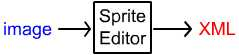
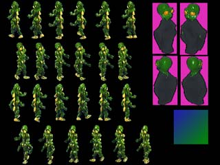
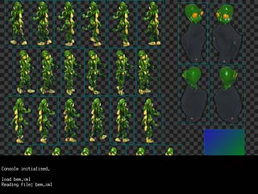
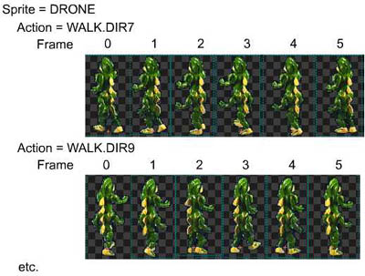
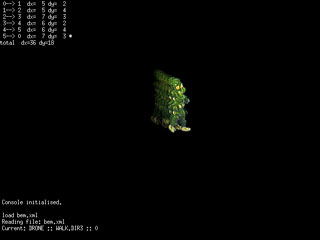

|
|
Tools : Sprite Editor
Overview | Sprite Editor | Encoder | Kyra XML
NOTE: Neither the Sprite Editor or Encoder can handle relative directory paths. So they need to be run from the directory where the source files are and the output files will go.
The Sprite Editor allows you to load an input file, mark the location of Sprites and Tiles in that file, and save an XML file describing the Sprites and Tiles.

Run the Sprite Editor. The Sprite Editor is one of those command line apps of yore. This is, admittedly, not the best thing but I didn't want to add even more required libraries to the package. The interface works fully, but won't get any UI awards.
NOTE: The Sprite Editor can open any file format that is supported by SDL_Image.
If you wish to open an image file to start editing (as opposed to an existing XML) type
image filename
If the file is 32 bit then the Editor will use the alpha channel as provided. If you use one or more colors that should be interpreted as transparent, then the command:
should be used. Transparent# can refer to either an RGB hex value, or a location of a pixel to interpret as a transparent color key. (LowerLeft, LowerRight, UpperLeft, UpperRight.) For example, the file:
image filename transparent0 transparent1 ...

is one of the sources for the BEM demo. Both pure black (x0,x0,x0) and the pink (xE0,x2D,xB8) should be interpreted as transparent. So the command
image bem.tga 000000 E02DB8
loads the image, which will look like:

in the...
View Mode
The black and white checkerboard pattern in the background, which makes the alpha channel easier to see. For ease of use, the Console has a command history buffer and the tab key will complete a command. (The console is an old, modified version of SDL_Console by Garret Banuk. Check out http://www.wpi.edu/~mongoose/SDL_Console)
To load an existing .XML file, you would use:
load filename.xml
NOTE: If you test out this example, make sure you 'save filename', instead of just 'save', so you don't overwrite the existing bem.xml file.
To switch back to the help screen, press F1. Press F2 to return to the view screen. Right-click and drag to move the visible area.
Sprites
Sprites are made up of Actions. Actions are made up of frames. There is a full discussion of this relationship on the Engine page. But for now, this illustrates the relationship to be created:

To set the current sprite to be created or work on:
sprite DRONEand the first Action to define
action WALK.DIR7
The 'WALK.DIR7' syntax is special. If, in the engine, you reference the Action by a string identifier, then it will still be 'WALK.DIR7'. On the other hand, if you reference it by #define id, then it will be WALK | DIR7. (We'll discuss prefixes later, so with a prefix it would be BEM_WALK | BEM_DIR7 which is a little more rational.) So the '.' is used to split up the id. Very useful if you want something like ALLIED | TANK | SMALL. Where each part is part of a set: ALLIED/AXIS, TANK/APC/BOAT, LARGE/SMALL. Due to a limitation of the Encoder there can only 3 parts to the name. (2 dots.)
At this point, click and drag to define a frame. And click and drag to define another. You can delete a frame with the 'delete' key. Click on an existing frame, and information about it will print in the console window.
Each frame has a 'hotspot', which is the origin of the Sprite. So when a Sprite is drawn at the screen at 100,100 the hotspot is the pixel drawn at that particular location. To define a hotspot, control-click. The hotspot will be shown as a red cross.
To edit a different action, use the 'action name' command.
Tiles
Tiles, to the editor, are very similar to Sprites, except that they don't have frames (in this version) and they are always square. Again, the Engine section more fully explains tiles.
To create a tile,
tile name
and then click and drag. Tiles do not have hotspots.
Saving
To save your work, use:
save
save filename.xml
The first command uses the current filename and the second form specifies a filename.
The editor saves output as (human readable) xml files. The TinyXml C++ package is used in Kyra.
Be warned that the editor will not ask you if you want to save before exiting.
You can zoom in or out -- in any mode -- with the keypad plus and minus. In the view mode, you can right-click to zoom to a point. Zooming is *very* useful to see what is going on.
Align Screen
After you have defined a sprite on the view screen, you may want to "align" it. Often a sequence of images of a Sprite walking or running will be offset from one another, by a non constant amount. For example, suppose you have a "little man" walking to the right across the screen. He may move 2 pixels between frame 0 and frame 1, but only one pixel from 1 to 2. Alignment enters this information into the Sprite itself. In the Engine, you can then move the Sprite the correct distance by calling DoStep.

Select an Action by clicking on any Frame in the Action. Press F3.
The text in the upper left shows the pixel deltas between frames, and the total distance covered by the sequence of frames. (The 'Stride' of the Action.) You can use the arrow keys to move the current frame in relation to the others, and page up and down to move between frames.
Any animation -- even single frame -- can be aligned.
Movie Screen
Pressing F4 will show an animation of the current Action in action, and it will walk, run, shimmy, sashay, or swim across the screen. Useful in conjunction with the align screen. A sprite that has not been aligned will not animate, of course.
And it's good to enjoy a sense of accomplishment!